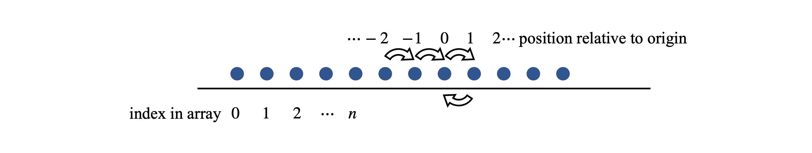
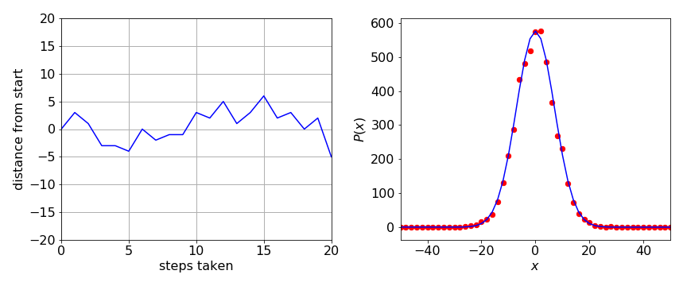
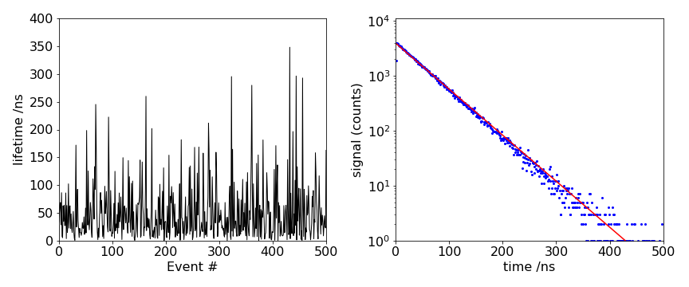

Monte Carlo Simulations¶
%matplotlib inline
import matplotlib.pyplot as plt
import numpy as np
from sympy import *
init_printing() # allows printing of SymPy results in typeset maths format
plt.rcParams.update({'font.size': 16}) # set font size for plots
3.1 Concept and motivation¶
In numerically integrating differential and other equations, a number of methods are available. Some Monte Carlo methods are described in earlier sections and other methods are described in Chapter 11. In this section simulations are described. A simulation uses the underlying physical laws and principles to control the calculation; no differential equations will be used. Usually processes, such as the decay of an excited state, the dispersal of a population of animals, or diffusion of molecules, can be simulated by taking a stochastic approach to the problem, repeating many calculations and slowly building up the results. This approach may seem rather odd; why not just solve the equations and be done with it? Well, sometimes this approach is simply pragmatic; a Monte Carlo approach is sometimes simpler and quicker to use. More often, it is the case that the equations describing some complex phenomenon cannot be solved algebraically or are simply not known because the process being studied is too complex. In these cases, we turn to the underlying physical laws and principles to control a simulation. Other examples of problems that can be studied are reaction kinetics, nuclear spins interacting with one another in a solid, ions moving through membrane pores, animals or people infecting one another, the spreading of forest fires, and oil moving through pores in rocks and so forth. Any computer simulation should be repeated many times to obtain an average value and then repeated again with many different initial values to explore the problem properly and to learn what are the important parameters that control behaviour.
Two classes of Monte Carlo calculations must be clearly distinguished. The class described in the last section uses a Monte Carlo method to solve rate equations or, in general, differential equations. The method now described is to simulate a physical process from first principles without explicitly solving equations. The algorithms to do these two types of calculations are, in many cases, rather similar, but the way they operate is fundamentally different.
3.2 Simulating physical processes¶
As this is a very general approach, and in principle applies to almost any process, there are no fixed rules other than to understand the problem at a fundamental level and then decide how it can be broken down into individual steps. Random numbers are always used to decide what is going to happen next, and the result of many trial calculations summed to remove any bias set up by the random nature of the process. It is important to bear in mind that we do not try to simulate any actual physical process but rather use a sort of pseudo-dynamics to reach the result by taking one atom or molecule at a time and deciding what it might end up doing, and then repeating this numerous times until we are satisfied with the result according to some predetermined condition.
As an example, consider simulating one-dimensional molecular diffusion. This could describe the diffusion of a molecule inside a long nanotube, along a channel in a zeolite or along a path into an enzyme’s active site. At any particular point, the molecule could be buffeted by a solvent molecule and knocked forwards or backwards. To idealize the problem we assume that each displacement or step is of the same length. More colourfully, it has become the convention in textbooks to describe a random walk as the meanderings of the proverbial drunkard. In the simulation of a random walk, only discrete steps can be taken \(1, 2, 3 \cdots\) and so on. A random walk of this discrete type is described as a Markov chain of events in which the next event to occur depends only on the current situation or state and has no history of past events because each event has to be independent of all others.
The walk is random and also unbiased, which means that the chance of moving to the right or to the left at any step is equal to \(1/2\). Suppose that a walk can have only two steps, then there are four ways of moving and only three places the walk can end up, which is either where it started, or two steps to the left, or two to the right. The chance of two left moving steps, or a left and a right, is \(1/4\). Similarly, the chance of a right-hand step and then a left-hand one, or of two right steps, is \(1/4\). The chance, therefore, of returning to the starting place is \(1/2\), and it is \(1/4\) of moving, either two places to the right, or two to the left, of the start. After three steps, the walker can have moved three steps to the right or to the left, or two right and one left, and vice versa, or two left and one right, and vice versa. After an odd number of steps, the walker cannot be at the start of the walk. Clearly, the number of combinations of left and right steps soon becomes complicated but it is, nevertheless, calculable. The probability of ending up at different positions is shown in the table. The sums of each row add to one as these entries represent probability. These probabilities can be calculated by the binomial distribution, and, when fractions are cleared, Pascal’s triangle results.
In an unbiased random event if \(p\) is the probability of success in any single event, the probability of \(k\) successes after \(n\) attempts is the binomial distribution
and for example the chance of throwing a die three times so that each time the same number appears is \(P(3, 3, 1/6) = 1/63\), the \(1/6\) appears because there a 6 sides on a die. The factor
is called the binomial coefficient.
In terms of the random walk, ‘success’ means that after a total of \(n\) steps, the walker is at position \(k\) steps away from the starting point. To calculate this probability, suppose that in a random walk of length \(2n\), there are \(x\) steps taken to the right, then \(2n - x\) must be taken to the left. Therefore, the walker ends at position \(x -(2n - x) = 2(x - n)\). If \(x\) steps are taken to the right out of a total of \(2n\) then the probability of this is
however, this can only be true if the walk ends at position \(2(x-n)=2k\). Therefore \(x=n+k\), giving
as the probability of being at \(k\) after \(2n\) steps. When \(p = 1/2\) and four steps are taken \((n = 2,\; k = 2)\) this equation gives a probability of \(1/16\) as shown by the bottom right entry in the table.
3.3 Simulation of one-dimensional diffusion¶
In diffusion, time, and distance are linked by Fick’s second law; Chapter 10.6.2 (iv). However, in a simulation, this equation is not used and the position where the walk ends after a fixed number of total jumps is calculated. This is repeated many times and a histogram made of the final positions. To make the walk last a longer time, a larger total number of jumps is taken because each jump is supposed to take an equal time. In the Monte Carlo simulation, the total number of steps, s, must be decided beforehand. The walk must start at only one place, say \(x_0\), and as there is an equal chance of moving to the right or left, the starting place of the walk will also be the mean value \(\langle x_0 \rangle\). The root mean square distance the walker moves in taking \(s\) steps, is \(\sqrt{s}\).
Using a random number generator in the range \(0 \to 1\) to determine the direction of each step, the position where the walker ends after completing the total number of steps is recorded. This value is stored in an array. It is important to remember to calculate the result only where the walker stops after the total number of steps is completed, and to record this value. To prevent the walker leaving either end of the array used to hold the final positions, we could make the array many times s so the walk cannot reach the end within the number of allotted steps. Alternatively, and more reliably, we can check when the ends are reached, but this will make the calculation a little slower. Finally, the calculation is repeated to improve the statistics.
Start the walk at the centre of the array prob, by making its length an odd number n, then the centre is at \((n - 1)/2\). If the walk consists of an even number of steps, then the walker must end up an even number of positions away from the starting point, \(0,\; \pm 2,\; \pm 4\), and so forth. Stored in an array, these steps leave every odd-numbered array index as zero. To avoid having a graph with every other point as zero, the change in the number of positions away from the starting point can be divided by two, because it is an even number, and then added to the index of the starting point \((n - 1)/2\). The variable m in the code below is the number of jumps away from the start. The algorithm below only works, as written, for an even number of steps in a walk, or as \(2n\) steps for odd-numbered \(n\). To calculate the distance moved, a second array must contain only even numbers with the value zero at the starting point index \((n - 1)/2\); this is array \(\mathtt{xdata}\). Each jump is taken to be one time step; therefore, the number of jumps is equivalent to time.

Figure 9. Labelling a random walk.
In the calculation, the parameters and arrays are defined first. A random number between \(0\) and \(1\) is produced and a check is made to see if it is \(\lt 0.5\). If it is, this is taken to be a right-hand jump and \(1\) is added to the counter \(m\), if not, \(1\) is subtracted from \(m\). The loop \(\mathtt{for\; L\; in\; range(reps):}\) and the associated \(\mathtt{pass}\) later on, make the calculation repeat \(\mathtt{reps}\) times. The array \(\mathtt{xdata}\) contains the position away from the start of the walk.
# Algorithm: 1D random walk
n = 501 # walk array size
steps= 50 # number of time steps
reps = 5000 # repeats
prob = np.zeros(n,dtype =float) # array for probability
xdata= np.zeros(n,dtype =float) # x positions
mdata= np.zeros(reps,dtype =int) # array to hold distce from start
c = ( n - 1 )//2
s=0
for L in range(reps):
m = 0
for j in range(steps):
r = np.random.ranf() # choose random number 0-1
if r < 0.50 :
m = m + 1 # move right one step
else:
m = m - 1
pass
mdata[L] = m
prob[c + m//2] = prob[c + m//2] + 1 # calculate probabilty at each position. // is integer division
pass # end of ‘for L ..reps’
for i in range(n):
xdata[i] = (-c + i )*2 # distance from start, only even x numbers
# plot data. Plot either one or the other but not both together on same plot
#plt.plot(mdata[0:50]) # displacement from start left in fig10
#plt.plot(xdata,prob) # distribution
#plt.show()
The results are shown figure 10. On the left, position vs time, in terms of steps taken, is shown for three different walks. On the right, the probability histogram is shown. Before plotting the array, prob was normalized by dividing by the number of repetitions and then by two because the distance stepped is always even. The Gaussian or normal distribution
is the probability of the walker being found at position \(x\) where \(\langle x\rangle\) is the mean position, which is zero in this calculation, and \(\sigma\) the standard deviation of the walker’s position. This probability is ‘continuous’, \(x\) can take any value, unlike the probability calculated by the discrete random walk; however, the agreement between the two calculations is very good. The graph below shows that if there are \(s\) steps in the random walk, then \(\sqrt{s} = \sigma\). As an exercise, calculate the distribution for other walk lengths. You should find that as the walk gets longer, the peak is less and the wings broader, as common sense would dictate for diffusion.

Figure 10. Left: The position vs time (as number of steps) of a random walker. Right: Five thousand simulations of a random walker forming a discrete distribution of 50 steps each and the distribution from walker following an unlimited number of steps and so forming a Gaussian distribution \(p(x)\) with \(\sigma = 50\) (blueline).
3.4 Reacting molecules.¶
Many molecules react by a first-order process; \(A\overset{k}\to B\), e.g. \(\mathrm{CH_3CN} \to \mathrm{CH_3NC}\) or a cis - trans isomerisation. A first-order decay was calculated by the Gillespie method in Section 2.2, but the method used there is very different to this one.
Imagine instantly starting a reaction and then being able to observe each molecule individually and record the instant \(t\) that each reacts. Each molecule follows a first-order process, the probability of not having reacted up to time \(t\) is \(p = e^{-kt}\), where \(k\) is the rate constant and the lifetime \(\tau\) for the reaction is \(\tau = 1/k\). Observing these times for different molecules allows the probability distribution to be made and the reaction rate constant or lifetime calculated. The lifetimes of excited states and of first-order reactions have a huge range from \(\approx 10^{-13}\) to \(\gt 10\) s. The lifetimes of radioactive nuclei range from a few seconds to thousands of years.
When we simulate the population of a species, the distribution of reaction times has to be known. This can be achieved by inverting the exponential equation to produce the time and guessing the probability \(p\), from a uniform distribution between zero and one. The list of times produced by repeatedly doing this are then made into a histogram and displayed, and, if enough events are recorded, a decay similar to one that could be observed experimentally will be produced. The time \(t\) that a molecule reacts, not having reacted up to that time, is
and \(p\) is guessed from a uniform distribution in the range \(0 \to 1\).
One way of doing the calculation is shown below. A histogram of time intervals is made by making the time into an integer index of an array and then adding up the number of times this index occurs. The array is called \(\mathtt{fcount}\); the maximum time is \(\mathtt{maxt}\) and the number of bins in the histogram, ‘bins’. The method is:
(1)\(\quad\) Define parameters; set arrays to initial values;
(2)\(\quad\) Repeat the following calculation in a ‘for’ loop.
\(\qquad\) Calculate \(t=-\ln(p)/k\), where \(p\) is a random number \(0 \to 1\).
\(\qquad\) Convert \(t\) to an integer to use as array index (see code below).
\(\qquad\) Add up the number of events with this index in \(\mathtt{fcount}\).
The Python code is shown below with 5000 events placed in a histogram of \(100\) bins. The reaction lifetime \(\tau=50\). In the simulation, the time - scale need not be explicitly defined; each time unit could be femtoseconds or years; it all depends on the reaction.
events= 5000 # integer
bins = 500 # integer
maxt = 500.0
tau = 50.0 # ns
fcount= np.zeros(bins,dtype=int)
dtime = np.zeros(bins,dtype=float)
for i in range(bins):
dtime[i]= maxt*(i+1/2)/bins # make time bins, 1/2 to put in mid bin
pass
for i in range(events):
p = np.random.ranf() # random number 0..1
t = -tau*np.log(p) # time it fluoresces
indx = int(np.round(bins*t/maxt) ) # make into integer. *bins/maxt to make it dimensionless
if indx < bins: # check does not exceed limit
fcount[indx] = fcount[indx] + 1 # add photon to count
pass
#plt.plot(dtime,fcount)
#plt.yscale('log')
#plt.ylim([0.1,1e3])
#plt.show()
Some results are shown in figure 11. On the left, the time a molecule remains excited (residence time) is plotted vs. the event number. Although there are some long times the average time is about \(50\), which is the lifetime of the ensemble of molecules. The histogram of these times from the left figure produces the right-hand one when plotted on a log scale. This data looks just like that determined experimentally by time-correlated single photon counting experiments used to measure the excited state lifetime of a molecule or atom.

Figure 11 Left: The residence times vs event number for \(500\) events. Right: A histogram of the natural logarithm of the number of counts in each time channel in the simulation of a first-order rate process together with an exponential decay with the same decay time; \(\tau = 50\) in this example, and \(200000\) events have been recorded.